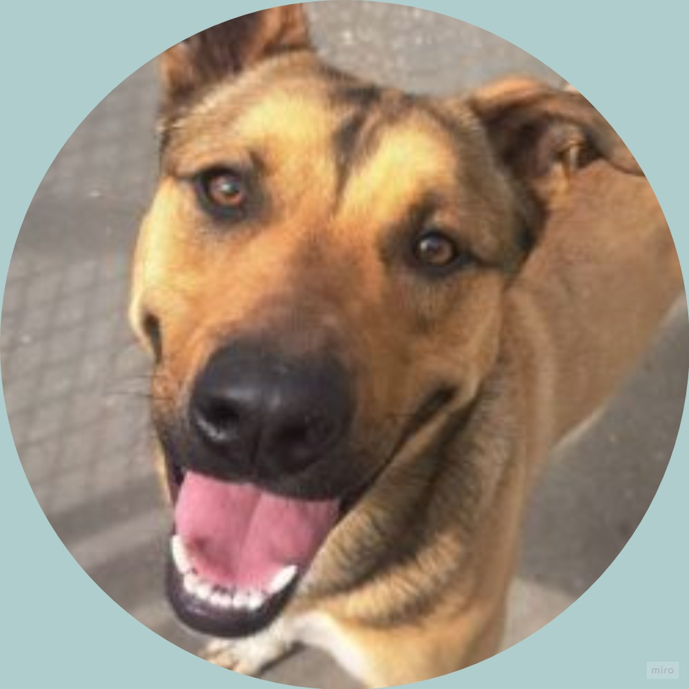

Quiero adoptarlo
Adopta a Tony
Raza: Mestizo | Edad: 3 años | Sexo: Macho
Tony es un perro muy alegre. Fue encontrado en el parque de las Américas en muy mal estado, por lo que ha recibido tratamiento durante el último mes. Actualmente se encuentra saludable y a la espera de una familia que lo adopte.